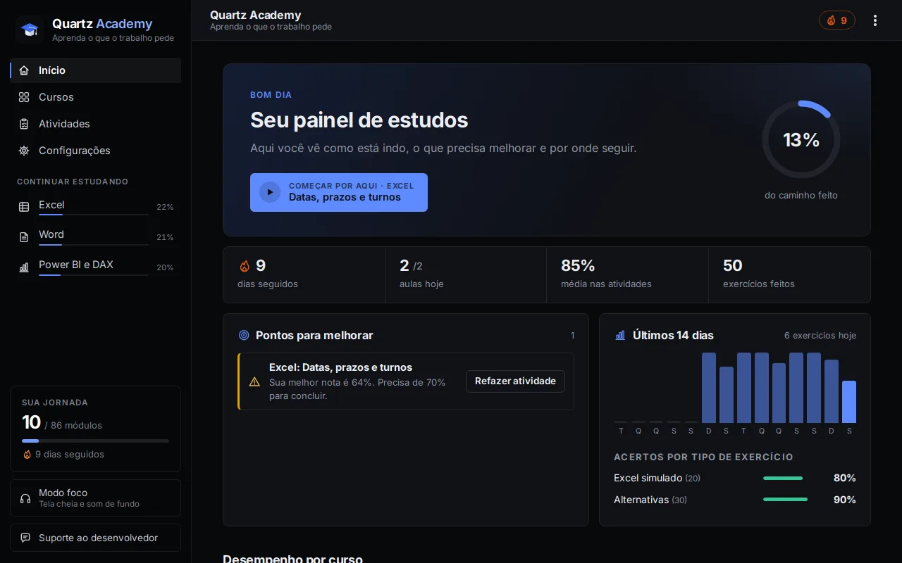
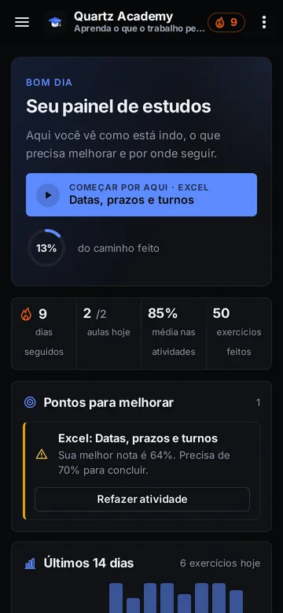
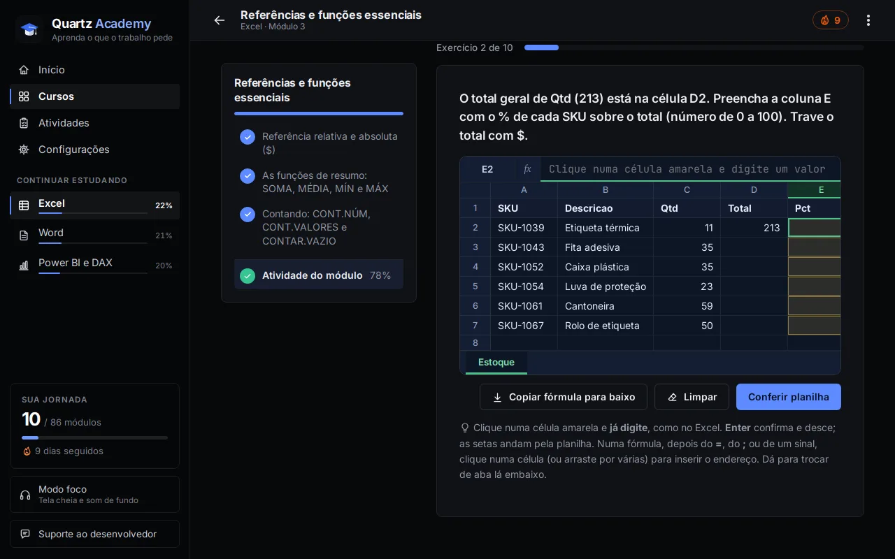
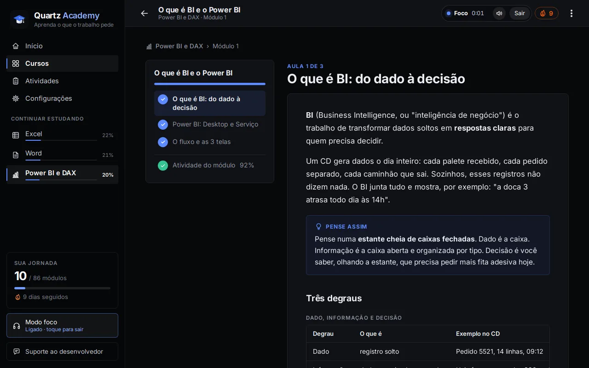
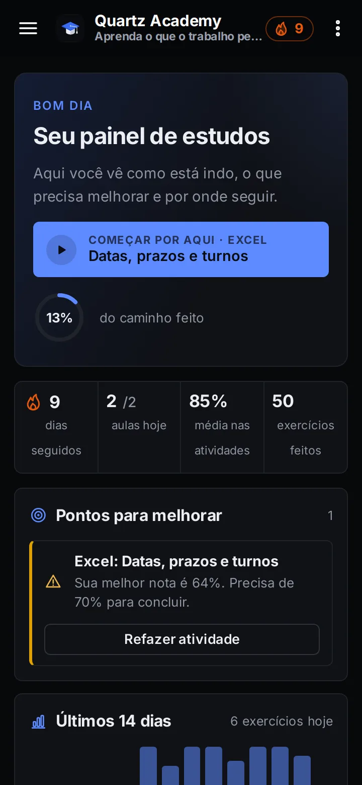

Excel
Da primeira fórmula ao painel: datas, PROCV, SOMASES, tabela dinâmica, Power Query e um simulado do teste prático.
26 módulos78 aulasAprenda o que o trabalho pede. Cursos gratuitos, do básico ao avançado, com exemplos do dia a dia e exercícios práticos dentro do app: planilha, documento e prancheta de verdade.


Os cursos
Planilhas, documentos, indicadores, impostos e sistemas: o que se usa todo dia no trabalho, explicado com casos reais e em linguagem simples.
Da primeira fórmula ao painel: datas, PROCV, SOMASES, tabela dinâmica, Power Query e um simulado do teste prático.
26 módulos78 aulasDocumentos com cara profissional: estilos, tabelas, sumário automático, mala direta, revisão e modelos.
14 módulos56 aulasChatGPT, Gemini e companhia: como pedir bem, como conferir a resposta e o que nunca colar lá.
8 módulos32 aulasComo um painel é construído: tratar os dados no Power Query, montar o modelo e escrever medidas em DAX.
10 módulos30 aulasNF-e, DANFE, CFOP, ICMS e companhia, do recebimento à expedição, incluindo a reforma tributária.
10 módulos40 aulasComo os sistemas de gestão funcionam por dentro e como resolver os problemas do dia a dia de um centro de distribuição.
9 módulos27 aulasA tela, coordenadas, formas, camadas, cotas e plantas, praticando numa prancheta com linha de comando.
9 módulos36 aulas
Pratique
No fim de cada módulo, você resolve a atividade fazendo: digita fórmulas numa planilha, formata um documento, aponta a parte certa de uma tela ou desenha numa prancheta.

Modo foco
Um toque e o app fica em tela cheia, com um som de fundo que abafa o barulho em volta e um relógio do seu tempo de estudo.

Seu painel
A tela inicial mostra o seu desempenho: dias seguidos, média das atividades, os últimos 14 dias e os pontos para melhorar, com um atalho para treinar cada um.
Como estudar
O caminho já vem montado: é só seguir.
O Quartz Academy está nos últimos testes e ainda não tem download. Quando a primeira versão sair, ela aparece aqui e nas novidades da página inicial, grátis como todas as gemas.